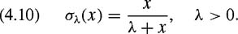

|
| |||||||||||||
|
|
||
Thus far, we have seen in chapter 2 that the Bug algorithms are complete sensor-based planners that work in unknown spaces, but are limited to planar configuration spaces. Then, at the beginning of this chapter, we have seen that the attractive/repulsive potential function approach applies to a general class of configuration spaces, but suffers from local minima problems, and hence is not complete. The wave-front planner addresses the local minima problem, but requires time and storage exponential in the dimension of the space. In this section, we introduce a new potential that is a function of distance to the obstacles, has only one minimum and applies to a limited class of configuration spaces with dimension two, three, and more. Such potential functions are called navigation functions, formally defined in [239,364].
A function is called a navigation function if it
is smooth (or at least Ck for k ≥ 2),
has a unique minimum at qgoal in the connected component of the free space that contains qgoal,
is uniformly maximal on the boundary of the free space, and
is Morse.
A Morse function is one whose critical points are all non-degenerate. This means that critical points are isolated, and if a Morse function is used for gradient descent, any random perturbation will destabilize saddles and maxima. The navigation function approach represents obstacles as  in other words, βi (q) is negative in the interior of
in other words, βi (q) is negative in the interior of  , zero on the boundary of , and positive in the exterior of .
, zero on the boundary of , and positive in the exterior of .
This approach initially assumes that the configuration space is bounded by a sphere centered at q0 and has n dim -dimensional spherical obstacles centered at q1, … qn. The obstacle distance functions are easy to define as
where ri is the radius of the sphere. Note that βi (q) increases continuously as q moves away from the obstacle. Instead of considering the distance to the closest obstacle or
the distance to each individual obstacle, we consider
| (4.8) |
|
Note that β(q)is zero on the boundary of any obstacle, and positive at all points in the interior of the free space. This presumes that the obstacles are disjoint.
This approach uses β to form a repulsive-like function. The attractive portion of the navigation function is a power of distance to the goal, i.e.,
| (4.9) |
|
where γκ has zero value at the goal and continuously increases as q moves away from the goal. The function is equal to zero only at the goal, and it goes to infinity as q approaches the boundary of any obstacle. More importantly, for a large enough κ, the function has a unique minimum. This is true because as κ increases, the term ∂γκ/∂q dominates ∂β/∂q, meaning that the gradient of points toward the goal. Essentially, increasing κ has the effect of making take the form of a steep bowl centered at the goal. Increasing κ also causes other critical points to gravitate toward the obstacles, as the range of repulsive influence of the obstacles becomes small relative to the overwhelming influence of the attractive field.
Near an obstacle, only that obstacle has a significant effect on the value of . Therefore, the only opportunity for a local minimum to appear is along a radial line between the obstacle and the goal. On this line near the boundary of an obstacle, the Hessian of cannot be positive definite because is quickly decreasing in value moving from the obstacle to the goal. Therefore there cannot be any local minimum for large κ,except at the goal [239].
So has a unique minimum, but unfortunately it can have arbitrarily large values, making it difficut to compute. Therefore, we introduce the analytical switch, which is defined as
| (4.10) | 
|
Since σλ(x)is zero at x = 0, converges to one as x approaches ∞, and is continuous (figure 4.13), we can use σλ(x)to bound the value of the function , i.e.,
| (4.11) |
|
The function s(q, λ) has a zero value at the goal, unitary value on the boundary of any obstacle, and varies continuously in the free space. It has a unique minimum for a large enough κ. However, it is still not necessarily a Morse function because it may have degenerate critical points. So, we introduce another function that essentially sharpens s(q, λ)so its critical points become nondegenerate, i.e., so that s(q, λ) can become a Morse function. This sharpening function is
| (4.12) |
|
For λ = 1, the resulting navigation function on a sphere-world is then
| (4.13) |
|
which is guaranteed to have a single minimum at qgoal for a sufficiently large κ [239]. Consider the configuration space in figure 4.14. The effect of increasing κ can be seen in figure 4.15, which plots the contour lines for φ as κ increases. For κ = 3, φ has three local minima, one of which is the global minimum. For κ = 4 and 6, the local minima become more apparent because it is easier to see the contour lines (actually loops) that encircle the local minima. For κ = 7 and 8, the "bad" minima are there but hard to see. Eventually, the "bad" minima morph into saddle points, which are unstable. For κ = 10, φ has a unique minimum. Therefore, gradient descent will direct the robot to the goal.
We can see the effect of the potential function steepening, critical points gravitating toward the goal, and local minima turning into saddles, in figure 4.16. Unfortunately, this steepening effect has an adverse consequence. The drawback to this particular navigation function is that it is flat near the goal and far away from the goal, but has sharp transitions in between (figure 4.16). This makes implementation of a gradient descent approach quite difficult because of numerical errors.
The result of sphere-spaces is just the first step toward a more general planner. A sphere-space can serve as a "model space" for any configuration space that is diffeomorphic to the sphere-space. Once we have a navigation function for the model space, to find a navigation function for the diffeomorphic configuration space, we need only find the diffeomorphism relating the two spaces.
In this subsection we consider star-spaces consisting of a star-shaped configuration space populated by star-shaped obstacles. A star-shaped set S is a set where there exists at least one point that is within line of sight of all other points in the set, i.e.,
See figure 4.17. All convex sets are star-shaped, but the converse is not true.
The approach is to map a configuration space populated by star-shaped obstacles into a space populated by sphere-shaped obstacles. It can be shown [364] that for two free configuration spaces M and F, if φ : M → [0, 1] is a navigation function on M and there exists a mapping h : F → M which is a diffeomorphism, i.e., it is smooth, bijective, and has a smooth inverse, then φ = φ ∘ h is a navigation function on F (see figure 4.18). This diffeormorphism ensures that there is a one-to-one correspondence between critical points. We will use this property to define navigation functions in star-spaces using results from sphere-spaces.
The h mapping between the star- and sphere-spaces will be constructed using a translated scaling map
| (4.14) |
|
where
| (4.15) |
|
where qi is the center of the star-shaped set, and pi and ri are, respectively, the center and radius of the spherical obstacle. Here βi (q) defines a star-shaped set such that βi (q) is negative in the interior, zero on the boundary, and positive in the exterior.
Note that if q is in the boundary of the star-shaped obstacle, then (1 + βi (q)) = 1, and thus . In other words, Ti (q) maps points on the boundary of the star-shaped set to a sphere.
For the star-shaped obstacle , we define the analytical switch
| (4.16) |
|
where
| (4.17) |
|
i.e., is zero on the boundary of the obstacles except the "current" obstacle . Note that si (q, λ)is one on the boundary of , but is zero at the goal and on the boundary of all other obstacles except  .
.
We define a similar switch for the goal which is one at the goal and zero on the boundary of the free space, i.e.,
| (4.18) |
|
Now, using the above switches and a translated scaling map, we can define a mapping between star-space and sphere-space as
| (4.19) |
|
where Tq goal(q) = q is just the identity map, used for notational consistency.
Note that hλ(q) is exactly Ti (q)on the boundary of the because si is one on the boundary of and for all j ≠ i, sj is zero on the boundary of (here we include sq goal as one of the sj 's). In other words, for each i, hλ(q)is Ti on the boundary of obstacle , which maps the boundary of a star to a sphere. Moreover, hλ(q) is continuous and thus hλ(q) maps the entire star-space to a sphere-space. It can be shown that for a suitable λ, hλ(q)is smooth, bijective, and has a smooth inverse, i.e., is a diffeomorphism [239]. Therefore, since we have a navigation function on a sphere-space, we also have a navigation function on the star-space.
|
|
||
|

 "Click To expand")